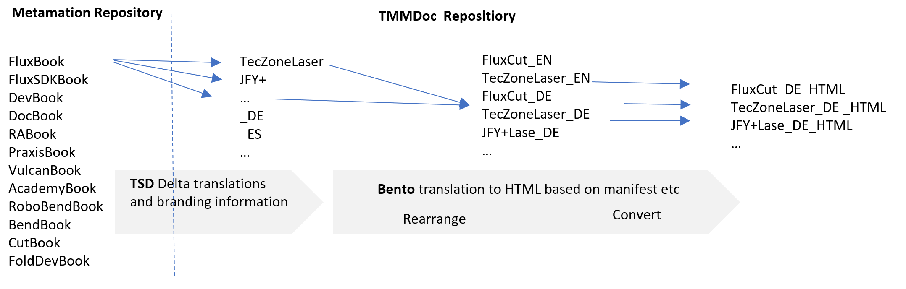

Hosting
Basics
-
The master file in the Metamation repository is kept in a most complete form but should also not be cluttered with all kind of branding information
-
First step is that all documents are translated in order to keep the translation clean and non redundant and are stored in the TMMDoc Repository. Each releas cycle we get the diff and only send the delta to the translation office.
-
Within the branding process we only have delta descriptions in contents.txt. This ensures that every added file in the master document gets automatically populated in all branded files

The structure is explained on the complex example of FluxBook
Metamation repository
The Master documents like FluxBook stays on the Metamation repository that every employee has a low threshold to contribute
TMMDoc repositiory
The Fluxbook repository contains for each product a folder and the translated versions of FluxBook in _DE etc.
A example folder structure of TecZoneLaeser is shown below.
Branding folder (e.g TecZoneLaeser)
For each branding a separate folder is set up with a new manifest and a delta contents.txt
Manifest.txt in Branding folder
Manifest.txt looks like this:
TITLE=TecZoneLaser OUTDIR=../TecZoneLaserHTML LOGO=img/Trumpflogo.png,207,34 COPYRIGHT=Copyright © 2023 by Trumpf. All rights reserved. LANGUAGES=EN,DE,ES ATTRIBUTE=appName:Flux ATTRIBUTE=bendApp:Flux
For the branding a new title etc is given, languages are added
contents.txt in Branding folder
The contents.txt file is a substraction and replacement description. if it is a empty file then the direct version of the Master is published. If a subproduct like TecZoneLaser is extracted it might look like this:
Master contents.txt |
TecZoneLaser contents.txt |
[Intro] |
[.\Cut\intro] |
Explanation of contents.txt in the TecZoneLaser folder:
[intro]
The intro chapter is used but heavily modified. The master file has a lot of bending examples which are not good for a laser program.
[HomeZone]
A new chapter HomeZone is added which is specific for the Trumpf installation how FluxCut is integrated in Boost HomeZone
[.\Cut\workflow] etc…
The folders workflow, advancedtopics and Applicationsetup is lifted one level up
-[Cut]
Since all folders were lifted up we don’t need the original cut chapters
-[CAD] …
Many other chapters are not needed
impressum
The Trumpf impressum is added or exchanged in case it is already existend
Further details of the folder structure example above
-
the branding folder needs to have the same structure than the master folder. Cut is a sub-chapter of FluxBook which will be lifted one level up so it needs to be on level 2
-
in the folder res are the informations added in Bento for the HTML file to define the branded color scheme
-
bento.css
-
site.css
-
favicon.ico
-
-
as stated the contents.txt of e.g. .\TecZoneLaser\Cut\workflow is a delta file, if its empty then the chapter is taken as it is or if a subfolder is not set up the master subfolder will be taken as it is.
-
if a e.g .\TecZoneLaser\Cut\ApplicationSetting\index.adoc needs to be changed the path needs to be replicated in the branding folder